The existing artwork, recoloured pixel by pixel — nothing redrawn. The saturated orange racket maps to the accent, the white type maps to Voltage White, and both keep their original shading and antialiasing. Transparency is intact, so it drops straight onto Deep Current.

